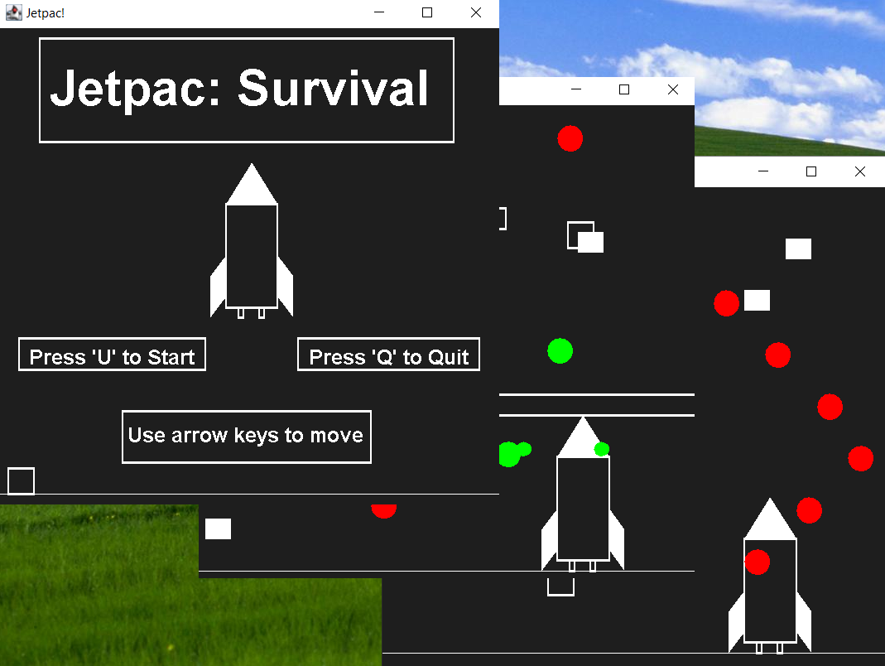
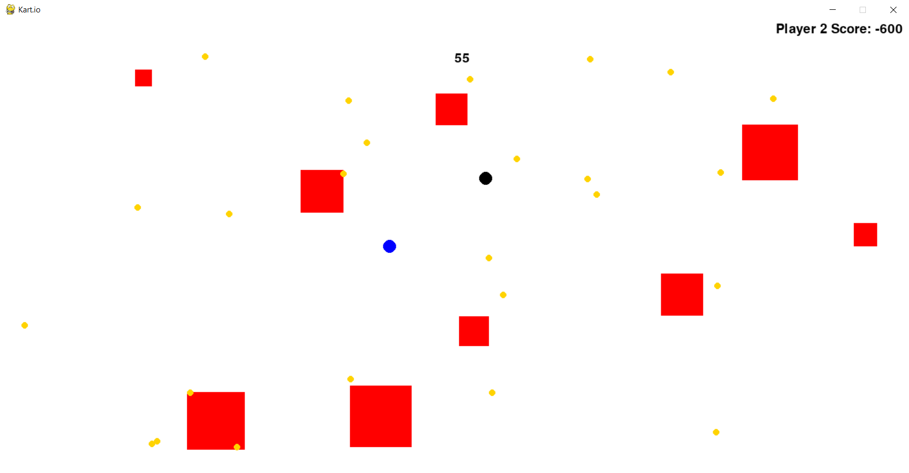

My Portfolio
-
Jetpac: Survival
Jetpac: Survival is a recreation of the arcade game Jetpac, with gameplay elements inspired by the World's Hardest Game, in memoriam of the now defunct Adobe Flash software. It is written entirely in Java and utilizes the Graphics2D library to render every object. I developed this with my partner Brayden Milner (milnerb@rose-hulman.edu) for our CSSE220 final project.
-
Kart.io
Kart.io is a peer-to-peer 2-player game written in Python developed using the PyGame platform. The objective of the game is to collect as many coins as you can while avoiding the obstacles before the timer runs out. The player with the highest score wins. This game was also developed by my partner Brayden and I for our CSSE120 final project.